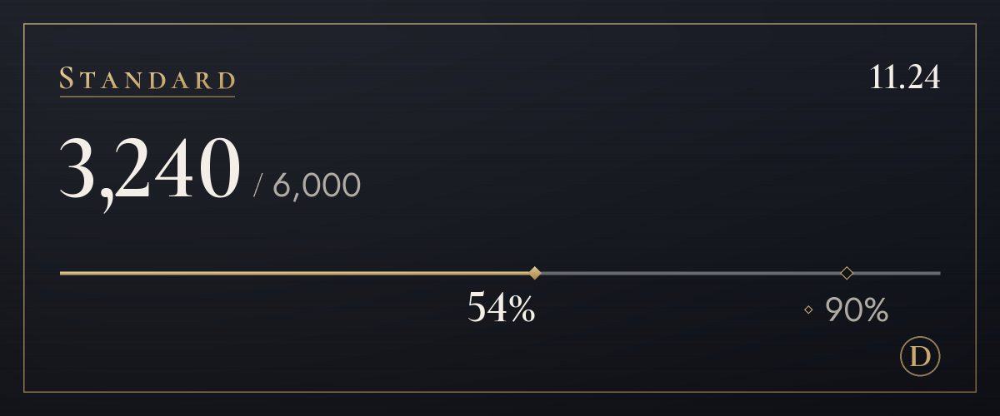

요금제
무료로 먼저 써 보고, 더 필요하면 바꿔요.
지금은 시험 운영 중이라 결제를 받지 않아요. 결제가 열리면 이 페이지에서 가입하고 해지할 수 있어요. 시험 운영 동안은 한도를 넘어도 번역이 멈추지 않아요.
무료
0원
먼저 써 보기 (원문 보기는 건수에 들지 않아요)
월 100건 (하루 약 3건), 말투 4가지는 처음 14일
사진 글자 번역 한 장 보통 4건, 사진에 덮어쓰기 보통 6건도 이 한도에서 써요
시작하는 법 보기라이트
월 3,900원
서버마다 말투를 골라요. 친구들과는 반말로, 처음 간 곳에서는 존댓말로
월 1,200건 (하루 약 40건), 말투 4가지, 다 써도 하루 20건 더
사진 글자 번역 한 장 보통 4건, 사진에 덮어쓰기 보통 6건도 이 한도에서 써요
선택 (라이트)스탠다드
추천
월 12,900원
매일 대화하는 사람에게 넉넉하게
월 6,000건 (하루 약 200건), 말투 4가지, 다 써도 하루 20건 더
사진 글자 번역 한 장 보통 4건, 사진에 덮어쓰기 보통 6건도 이 한도에서 써요
선택 (스탠다드)플러스
월 19,900원
많이 쓰는 사람에게 가장 넉넉하게
월 20,000건 (하루 약 667건), 말투 4가지, 다 써도 하루 20건 더
사진 글자 번역 한 장 보통 4건, 사진에 덮어쓰기 보통 6건도 이 한도에서 써요
선택 (플러스)
- 가격은 부가세 포함이에요. 청구지가 한국 밖이면 달러로 결제돼요(세금 별도).
- 유료 요금제는 매달 자동으로 결제되는 구독이에요. 언제든 해지할 수 있고, 해지하면 다음 결제부터 멈춰요.
- 무료 요금제는 저절로 유료로 바뀌지 않아요.
- 사용한 부분은 청약철회가 제한되며, 무료 요금제로 먼저 써 볼 수 있어요.
- 번역은 AI(Anthropic의 Claude)가 해요. 틀릴 수 있으니 중요한 내용은 원문도 함께 확인해 주세요.
- 자세한 내용은 이용약관과 환불 정책에 있어요.
건수는 이렇게 세요
요금제의 한도는 건으로 세요. 메시지 하나를 언어 하나로 번역하면 1건이에요.
- 글
- 1건메시지 1개가 1건이에요. 긴 글은 한글, 한자, 가나 위주면 200자마다, 그 밖의 언어는 500자마다 1건씩 더 세요. 번역할 내용이 없어 건너뛴 글은 세지 않아요.
- 우클릭 번역
- 1건글과 같아요. 원문 보기와 다른 언어로 보기는 세지 않아요.
- 사진 글자
- 보통 4건읽기 3건과 읽은 글의 번역이에요. 글자가 없는 사진은 세지 않아요. 메시지 하나에 4장까지 읽어요.
- 덮어쓰기
- 글 덩이 하나에 6건읽기 3건, 번역 1건, 덮어쓰기 2건이에요. 덩이가 늘면 덩이마다 번역이 1건 이상 더 들고, 16개마다 사진 한 장처럼 세요. 16개를 넘으면 건수를 먼저 보여 주고 확인하면 덮어써요(48개까지). 글꼴을 바꾸는 것은 세지 않아요.
- 음성 메시지 준비 중
- 소리 1초에 1건휴대폰 앱에서 보낸 음성 메시지를 받아써서 번역하는 기능을 준비하고 있어요. 열리면 받아쓴 글의 번역을 더하고, 말이 없으면 세지 않아요.
- 하루 상한
- 사진 200장한 사람마다 세고 요금제와 상관없이 같아요. 자동으로 한꺼번에 돌려 다른 사람의 번역이 멈추지 않게 둔 울타리예요.
- 누가 내나
- 사진 아이콘이나 우클릭으로 번역한 것은 누른 사람의 건수예요. 글을 올린 사람의 건수가 아니에요.
예를 들면
하루 200건이면
스탠다드의 하루 환산
사진을 번역하고도 저녁 내내 이야기할 수 있는 양이에요.
하루 40건이면
라이트의 하루 환산
친구들과 한 시간 수다 떨기에 맞아요.

/번역 사용량에서 봐요.자주 묻는 질문
결제는 언제 열리나요?
지금은 시험 운영 중이라 결제를 받지 않고, 모두 무료 요금제로 써요. 사업자 등록과 결제 대행사 연결이 끝나면 열어요. 열리는 날은 지원 서버의 소식과 이 페이지에서 알려요. 한국은 원화로, 그 밖의 나라는 달러로 결제해요.
해지는 어떻게 하나요?
결제가 열리면 이 웹사이트의 요금제 페이지에서 가입한 것처럼 해지해요. 해지하면 다음 결제부터 멈추고, 이미 결제한 기간은 끝까지 써요. 봇의 설정 패널에 있는 요금제 관리 화면도 이 페이지로 이어져요.
환불은 어떻게 되나요?
첫 결제는 7일 안에 전액 환불받을 수 있어요. 서비스 장애나 설명과 다르게 제공된 경우도 환불해요. 나머지 기준은 환불 정책에 있어요.
사진은 저장되나요?
봇은 저장하지 않아요. 사진은 글자를 읽는 Anthropic으로 보내고 결과만 보여 줘요. 누르기 전에는 보내지 않아요. 읽은 글도 저장하지 않고, 번역문만 번역 캐시의 규칙(30일)을 따라요. 글꼴을 바꾸면 바로 다시 그릴 수 있게 덮어쓰기를 누른 사진과 읽은 글, 번역은 15분 동안 메모리에만 둬요.
번역은 누가 하나요?
AI(Anthropic의 Claude)가 해요. 사진 속 글자 읽기도 같은 AI예요. 틀릴 수 있으니 중요한 내용은 원문을 함께 확인해 주세요. 덮어쓴 사진은 설명(대체 텍스트)과 결과 아래 안내에 AI 번역이라고 적혀 있어요.